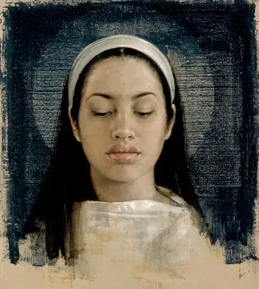

If this is your first introduction to Judith and her work, you are in for a delicious treat. Judith is an architectural historian and author of several works of narrative nonfiction that explore the intersection of art, photography and architecture. The New Criterion described her as “a scholar with a novelist’s eye for detail and a journalist’s easy style.”

{kind=link}
A: In telling these stories, I tried to cast a wide net, mirroring Mary’s ability to cross boundaries — whether religious, political, geographic or cultural. There are chapters on Mary’s Jewish foremothers as well as on Muslim devotion to Mary, for instance. Those who want to cultivate their moral, ethical and social awareness will also find much to consider here. Though Mary’s life and story speak directly to issues that many women face, this isn’t a book just for women, either. After all, even President Obama carries a picture of Mary in his wallet!
Q: How did coming into close view of Mary through writing this book change you as a person, a woman of faith, if at all?
A: For as long as I can remember I’ve carried a compelling image of Mary in my heart and mind. I grew up looking at a life-size reproduction of Raphael’s Madonna of the Chair (1514) that hung in the stairwell of my childhood home. In the painting, Mary’s gaze is very ambiguous and haunting – a mixture of pride and shyness. She holds the chubby baby Jesus tightly, as any new mother would, yet there’s a feeling that she is offering him to us too. In 2000, my mother and I visited the Pitti Palace in Florence and stood together before the original painting. It was a moment I’ll never forget.
{kind=link}
About twenty years ago, a Jesuit friend gave me a rose and a holy card depicting Our Lady of Guadalupe. He assured me that she would help me worry less. And so I began praying regularly to Guadalupe, at first with small concerns, which she invariably answered in witty, unexpected ways. Often her answers would be accompanied by an image of a rose or an actual rose—a reminder that Guadalupe manifested her presence to Juan Diego with roses, impossible roses in winter. Things turned serious when my youngest son was born and sustained brain damage. I begged Guadalupe to heal him, and she did. Today, he’s a star athlete (remind me never to complain about his preference for wearing clothes with sports insignias!). The doctors still don’t know what happened or how to explain his recovery, but I have no doubts. My friend, the painter J. Michael Walker, has created a series of wonderful intimate portraits of Guadalupe. One of them hangs in my writing studio in my direct line of sight. She’s a constant companion, and a reminder of the power of faith—her own, Juan Diego’s, and our own.
Q: I’ve read that you were born into a family of “architectural preservationists.” I also see that you’ve dedicated this work to your mother. To what extent did your background influence this book?
Q: I’m moved by the beauty of the visuals within this book (see below), and intrigued by how you melded all the different components into one work. How did you approach gathering up all these different pieces with the hope of turning them into something cohesive? Was it an arduous process?
Q: Because this piece is a slight diversion from your earlier books, did you find it difficult to sell the idea to your publisher?
A: Luckily, Random House was hugely supportive. My previous books explore ways of expressing our contemporary, multidimensional understanding of time and history within the limits of the printed page. In this book, I tie events in Mary’s historical life with 21st-century concerns in hopes that the reader can imaginatively inhabit two time periods at once.
Q: I’m thinking of the decline of the book with the advance of modern technology and the worry many authors have over whether we’ll even have books a decade or two from now. Your book, in all its visual beauty, seems a strong piece of evidence against the trend to go fully electronic. What are your thoughts on that?
A: People have been trumpeting the death of the book for a while now, yet the printed form is resilient. Just as opera didn’t die with the advent of movies, and movies weren’t killed off by television, books aren’t dead, they just have to share shelf space with other forms of entertainment. Books invite reflection, analysis, and a more meditative encounter than Web content can provide. We need to walk more and surf less! But that said, my heart leapt when I first saw the electronic version of Full of Grace on an iPad. Mary is always at the forefront, whether of faith or technology!
Q: If you could leave prospective readers with just one thing you’d like them to know about Mary in light of this work, what would it be?
Q: Judith, what is your greatest hope for this work, the thing that would help you know all your efforts have been worthwhile?
A: My hope is that Full of Grace comforts those who are suffering. I wanted to give those who are struggling with physical or emotional pain, those who are seeking and not finding a simple but liberating message: You are not alone. I’ve come to realize that the darkness, not knowing of how one will survive or get through an ordeal, is not a bad thing. For starters, it wakes you up to all the very real goodness in the world. But sometimes God’s voice cannot be heard over our loud cries for solace, understanding, a break. Fear is deafening, as well as blinding. But the stories I recount in Full of Grace are intended as assurance that God’s love is also relentless. It is steadfast. It is there. It is there for you
Q: What is one thing would you like us to know about you, the author of Full of Grace, that we might not find in a Google search?
A: I am an inveterate lover of animals, especially dogs, especially my beagle, Dreyfus. He’s old and fat—who isn’t!—but he’s got that unconditional love thing down pat.
{kind=link}
{kind=link}
Q: Finally, Judith, please point us to the place where we can encounter your work and life?
A: My website is a good place to learn more. It includes a blog, reviews and photos. I’d be delighted to hear from Peace Garden Writer readers, and welcome correspondence about their experiences with Mary, their faith journey, and anything else they’d like to share.
{kind=link}

John Nava has depicted Mary with a sublime serenity that belies her youth. Photo: © John Nava, 2001
{kind=link}
{kind=link}